Segment to Focus:
Guiding Latent Action Models in the Presence of Distractors
TL;DR
Latent action models learn actions from action-free video, but visual distractors (moving backgrounds, camera shake, other moving objects) make them encode exogenous motion instead of agent-controlled dynamics, so fine-tuned policies fail. Since agent and distractor pixels are typically spatially separated, MaskLAM restricts the reconstruction loss to agent pixels using zero-shot SAM masks, so only agent-controlled dynamics shape the latent action: no labels, no auxiliary losses, no architecture changes. Under distractors this yields up to 3.51× lower probe MSE and 4.97× higher return than LAPO, narrowing the gap to methods that rely on ground-truth action supervision.
Spatial separability
The abstract Ex-BMDP factorization is, in pixel space, mostly spatial: agent actions change agent pixels; distractors change everything else. This turns a modeling problem into a masking problem.
Mask the loss, not the model
MaskLAM restricts the forward-dynamics reconstruction loss to agent pixels. Distractor pixels contribute no gradient to the latent action: no auxiliary losses, no labels, no architectural changes to LAPO.
Robust & label-efficient
Up to 3.51× lower probe MSE and 4.97× higher return than LAPO under distractors, with compact latents, smaller label budgets, and graceful degradation under imperfect masks.
The problem: distractors hijack the latent action
Standard LAMs rely on global reconstruction objectives that force the model to encode the entire scene to predict future frames. With moving backgrounds, camera shake, or additional moving agents, pixel reconstruction has no reason to prefer agent dynamics over background variation; the latent encodes whatever varies most. As a result, the latent action space of LAPO no longer recovers the true action, and downstream policies fail.
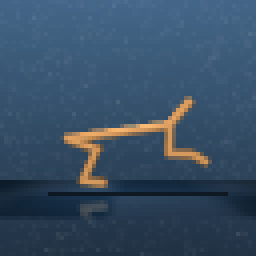
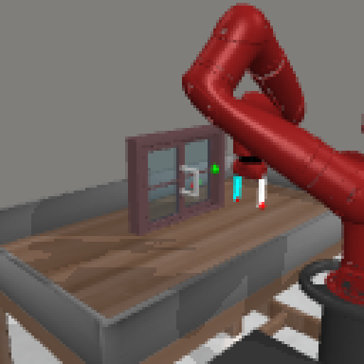
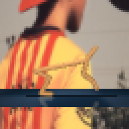
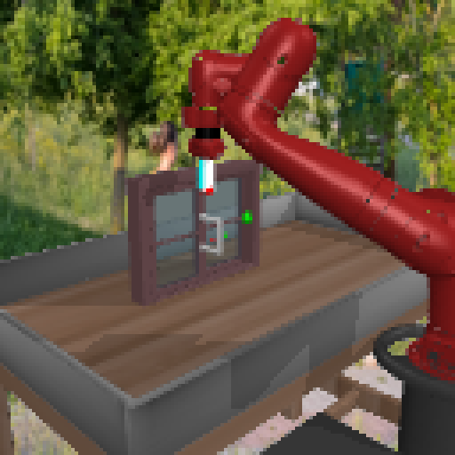
Method: a masked forward-dynamics loss
Prior work fixes the contamination of \(z_t\) at the representation level: action supervision, object-centric slots, or auxiliary optical-flow losses. MaskLAM takes a different route: instead of modifying the encoder or adding losses, we modify the prediction target to exclude exogenous dynamics from the learning signal. Given a binary agent mask \(M_{t+1}\), we restrict the FDM loss to agent pixels:
$$\mathcal{L}_{\text{FDM}}^{\text{MaskLAM}} = \frac{1}{\lVert M_{t+1}\rVert_1}\,\bigl\lVert M_{t+1} \odot (\hat{o}_{t+1} - o_{t+1}) \bigr\rVert_2^2$$
The loss is zero on distractor pixels, so where \(M_{t+1} = 0\) the residual is zeroed before it can propagate into \(z_t\). Encoding exogenous transitions can no longer reduce the loss, so the optimization stops pressuring the latent to capture distractor dynamics. Crucially we mask the loss, not the input: the IDM and FDM still see the full observation (plus the mask as a hint channel), so they can discover endogenous context the mask misses (e.g. a gripper's contact surface), while \(z_t\) is shaped only by endogenous prediction errors.
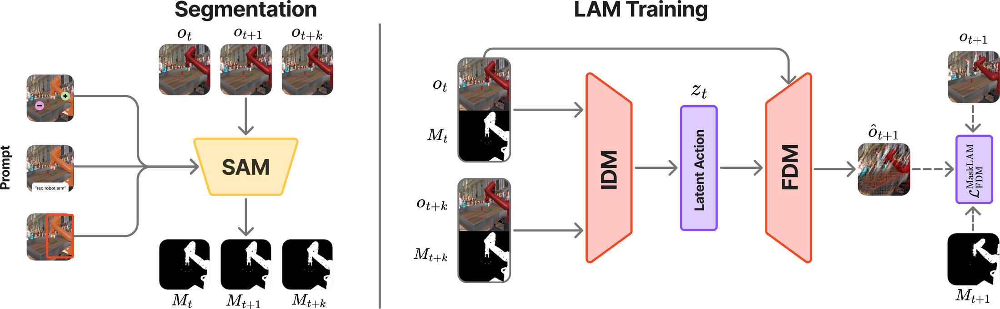
Main results
Across both vanilla and distractor settings, MaskLAM achieves the lowest probe error among label-free methods (LAPO, LAPO-Slots, LAOF), and the gap widens when distractors are added. MaskLAM@GT (simulator masks) and MaskLAM@SAM (zero-shot SAM 2.1 masks) are within noise of each other; off-the-shelf segmentation is sufficient. Better alignment translates to better policies, with the largest gains under distractors.
| Method | Distracting Control Suite | Distracting Meta-World | ||||||
|---|---|---|---|---|---|---|---|---|
| NMSE ↓ Vanilla |
NMSE ↓ Distractor |
NR ↑ Vanilla |
NR ↑ Distractor |
NMSE ↓ Vanilla |
NMSE ↓ Distractor |
NSR ↑ Vanilla |
NSR ↑ Distractor |
|
| LAPO | 0.297±.117 | 0.511±.034 | 0.236±.028 | 0.076±.009 | 0.074±.004 | 0.309±.009 | 0.851±.026 | 0.636±.015 |
| LAOM-Labels (uses GT actions) | 0.211±.006 | 0.216±.003 | 0.608±.017 | 0.566±.019 | 0.114±.010 | 0.142±.008 | 0.727±.028 | 0.781±.033 |
| LAOF | 0.639±.045 | 0.506±.019 | 0.072±.017 | 0.094±.020 | 0.185±.037 | 0.453±.057 | 0.716±.118 | 0.577±.079 |
| LAPO-Slots | 0.352±.012 | 0.657±.029 | 0.126±.021 | 0.045±.008 | 0.109±.006 | 0.245±.048 | 0.833±.032 | 0.827±.023 |
| MaskLAM@GT | 0.205±.006 | 0.206±.009 | 0.513±.029 | 0.378±.030 | 0.082±.004 | 0.088±.004 | 0.828±.036 | 0.843±.021 |
| MaskLAM@SAM | 0.213±.010 | 0.233±.037 | 0.493±.036 | 0.358±.040 | 0.078±.003 | 0.090±.005 | 0.828±.022 | 0.832±.031 |
Latent action quality (NMSE) and downstream behavior-cloning performance (NR/NSR), aggregated over environment suites, mean ± std over 3 seeds. Bold marks the best value per column; teal rows are ours. LAOM-Labels uses privileged ground-truth action supervision during pre-training and serves as an upper-bound reference.
MaskLAM recovers action-aligned latents
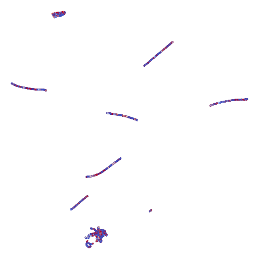
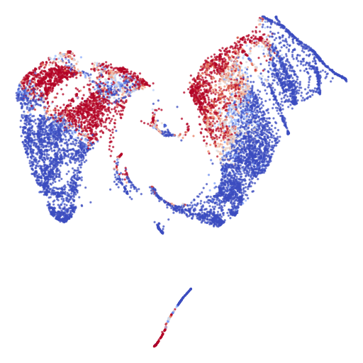
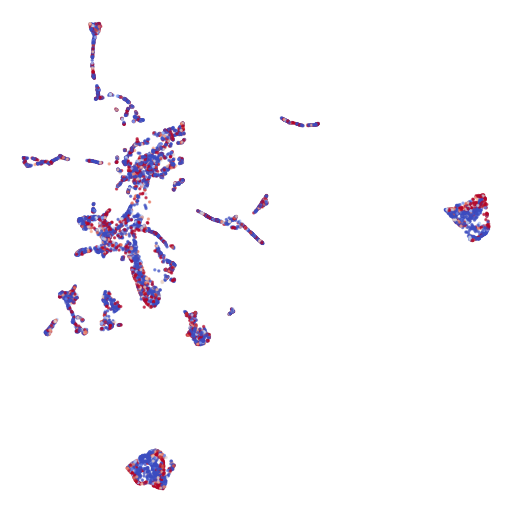
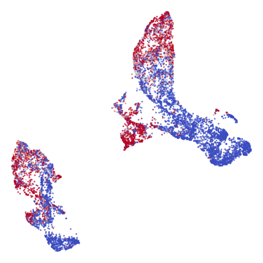
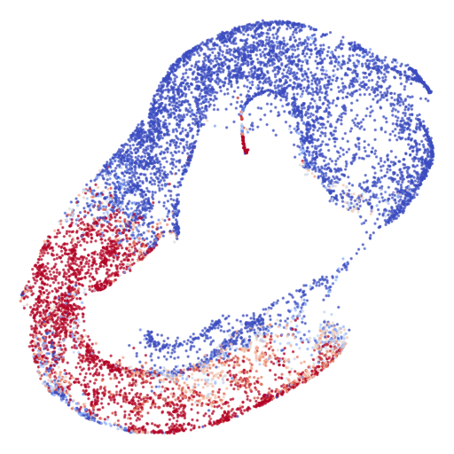
MaskLAM focuses on the agent, not the distractor
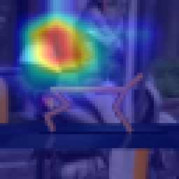
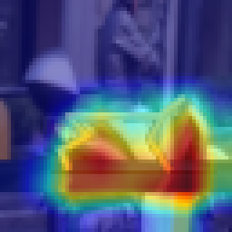
Attention over time: LAPO vs. MaskLAM
Per-environment saliency videos show LAPO's attention drifting onto moving distractors while MaskLAM stays locked on the agent throughout the episode.
static/videos/attention/ (e.g. cheetah_lapo.mp4 / cheetah_masklam.mp4) and
uncomment the <source> tags below; the layout is already wired up. Add one row per environment.
cheetah-run (DCS)
BibTeX
@article{fechner2026segment,
title = {Segment to Focus: Guiding Latent Action Models in the Presence of Distractors},
author = {Fechner, Marcus and Adnan, Hamza and L{\"u}th, Constantin C. and
Jackson, Matthew T. and Zakharov, Alexey and Z{\"o}llner, J. Marius},
journal = {arXiv preprint},
year = {2026},
url = {https://segment-to-focus.github.io/}
}